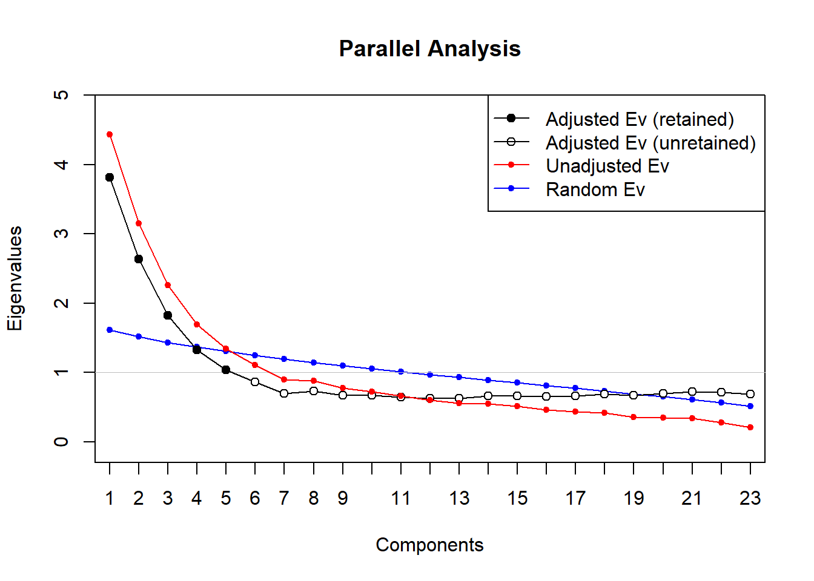
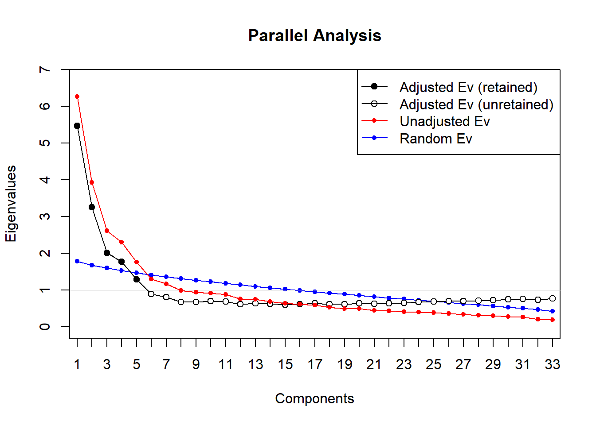

library(dplyr)
library(psych)
library(paran)
library(lavaan)
library(mice)Now that our data are useable, we need to look at the factor structure of the Autism Quotient (AQ) and to select the autism items to be retained for the remaining analyses.
survey_original_FU2 = read.csv("survey content FU2.csv")
AQ_FU2 = survey_original_FU2 %>% dplyr::select(contains("AQ"))
AQ_imputed_results_FU2 = mice(AQ_FU2, seed = 1234)##
## iter imp variable
## 1 1 AQ._1 AQ._2 AQ._5 AQ._6 AQ._8 AQ._9 AQ._10 AQ._12 AQ._13 AQ._14 AQ._16 AQ._17 AQ._18 AQ._19 AQ._20 AQ._21 AQ._25 AQ._26 AQ._27 AQ._29 AQ._30 AQ._31 AQ._32 AQ._33 AQ._34
## 1 2 AQ._1 AQ._2 AQ._5 AQ._6 AQ._8 AQ._9 AQ._10 AQ._12 AQ._13 AQ._14 AQ._16 AQ._17 AQ._18 AQ._19 AQ._20 AQ._21 AQ._25 AQ._26 AQ._27 AQ._29 AQ._30 AQ._31 AQ._32 AQ._33 AQ._34
## 1 3 AQ._1 AQ._2 AQ._5 AQ._6 AQ._8 AQ._9 AQ._10 AQ._12 AQ._13 AQ._14 AQ._16 AQ._17 AQ._18 AQ._19 AQ._20 AQ._21 AQ._25 AQ._26 AQ._27 AQ._29 AQ._30 AQ._31 AQ._32 AQ._33 AQ._34
## 1 4 AQ._1 AQ._2 AQ._5 AQ._6 AQ._8 AQ._9 AQ._10 AQ._12 AQ._13 AQ._14 AQ._16 AQ._17 AQ._18 AQ._19 AQ._20 AQ._21 AQ._25 AQ._26 AQ._27 AQ._29 AQ._30 AQ._31 AQ._32 AQ._33 AQ._34
## 1 5 AQ._1 AQ._2 AQ._5 AQ._6 AQ._8 AQ._9 AQ._10 AQ._12 AQ._13 AQ._14 AQ._16 AQ._17 AQ._18 AQ._19 AQ._20 AQ._21 AQ._25 AQ._26 AQ._27 AQ._29 AQ._30 AQ._31 AQ._32 AQ._33 AQ._34
## 2 1 AQ._1 AQ._2 AQ._5 AQ._6 AQ._8 AQ._9 AQ._10 AQ._12 AQ._13 AQ._14 AQ._16 AQ._17 AQ._18 AQ._19 AQ._20 AQ._21 AQ._25 AQ._26 AQ._27 AQ._29 AQ._30 AQ._31 AQ._32 AQ._33 AQ._34
## 2 2 AQ._1 AQ._2 AQ._5 AQ._6 AQ._8 AQ._9 AQ._10 AQ._12 AQ._13 AQ._14 AQ._16 AQ._17 AQ._18 AQ._19 AQ._20 AQ._21 AQ._25 AQ._26 AQ._27 AQ._29 AQ._30 AQ._31 AQ._32 AQ._33 AQ._34
## 2 3 AQ._1 AQ._2 AQ._5 AQ._6 AQ._8 AQ._9 AQ._10 AQ._12 AQ._13 AQ._14 AQ._16 AQ._17 AQ._18 AQ._19 AQ._20 AQ._21 AQ._25 AQ._26 AQ._27 AQ._29 AQ._30 AQ._31 AQ._32 AQ._33 AQ._34
## 2 4 AQ._1 AQ._2 AQ._5 AQ._6 AQ._8 AQ._9 AQ._10 AQ._12 AQ._13 AQ._14 AQ._16 AQ._17 AQ._18 AQ._19 AQ._20 AQ._21 AQ._25 AQ._26 AQ._27 AQ._29 AQ._30 AQ._31 AQ._32 AQ._33 AQ._34
## 2 5 AQ._1 AQ._2 AQ._5 AQ._6 AQ._8 AQ._9 AQ._10 AQ._12 AQ._13 AQ._14 AQ._16 AQ._17 AQ._18 AQ._19 AQ._20 AQ._21 AQ._25 AQ._26 AQ._27 AQ._29 AQ._30 AQ._31 AQ._32 AQ._33 AQ._34
## 3 1 AQ._1 AQ._2 AQ._5 AQ._6 AQ._8 AQ._9 AQ._10 AQ._12 AQ._13 AQ._14 AQ._16 AQ._17 AQ._18 AQ._19 AQ._20 AQ._21 AQ._25 AQ._26 AQ._27 AQ._29 AQ._30 AQ._31 AQ._32 AQ._33 AQ._34
## 3 2 AQ._1 AQ._2 AQ._5 AQ._6 AQ._8 AQ._9 AQ._10 AQ._12 AQ._13 AQ._14 AQ._16 AQ._17 AQ._18 AQ._19 AQ._20 AQ._21 AQ._25 AQ._26 AQ._27 AQ._29 AQ._30 AQ._31 AQ._32 AQ._33 AQ._34
## 3 3 AQ._1 AQ._2 AQ._5 AQ._6 AQ._8 AQ._9 AQ._10 AQ._12 AQ._13 AQ._14 AQ._16 AQ._17 AQ._18 AQ._19 AQ._20 AQ._21 AQ._25 AQ._26 AQ._27 AQ._29 AQ._30 AQ._31 AQ._32 AQ._33 AQ._34
## 3 4 AQ._1 AQ._2 AQ._5 AQ._6 AQ._8 AQ._9 AQ._10 AQ._12 AQ._13 AQ._14 AQ._16 AQ._17 AQ._18 AQ._19 AQ._20 AQ._21 AQ._25 AQ._26 AQ._27 AQ._29 AQ._30 AQ._31 AQ._32 AQ._33 AQ._34
## 3 5 AQ._1 AQ._2 AQ._5 AQ._6 AQ._8 AQ._9 AQ._10 AQ._12 AQ._13 AQ._14 AQ._16 AQ._17 AQ._18 AQ._19 AQ._20 AQ._21 AQ._25 AQ._26 AQ._27 AQ._29 AQ._30 AQ._31 AQ._32 AQ._33 AQ._34
## 4 1 AQ._1 AQ._2 AQ._5 AQ._6 AQ._8 AQ._9 AQ._10 AQ._12 AQ._13 AQ._14 AQ._16 AQ._17 AQ._18 AQ._19 AQ._20 AQ._21 AQ._25 AQ._26 AQ._27 AQ._29 AQ._30 AQ._31 AQ._32 AQ._33 AQ._34
## 4 2 AQ._1 AQ._2 AQ._5 AQ._6 AQ._8 AQ._9 AQ._10 AQ._12 AQ._13 AQ._14 AQ._16 AQ._17 AQ._18 AQ._19 AQ._20 AQ._21 AQ._25 AQ._26 AQ._27 AQ._29 AQ._30 AQ._31 AQ._32 AQ._33 AQ._34
## 4 3 AQ._1 AQ._2 AQ._5 AQ._6 AQ._8 AQ._9 AQ._10 AQ._12 AQ._13 AQ._14 AQ._16 AQ._17 AQ._18 AQ._19 AQ._20 AQ._21 AQ._25 AQ._26 AQ._27 AQ._29 AQ._30 AQ._31 AQ._32 AQ._33 AQ._34
## 4 4 AQ._1 AQ._2 AQ._5 AQ._6 AQ._8 AQ._9 AQ._10 AQ._12 AQ._13 AQ._14 AQ._16 AQ._17 AQ._18 AQ._19 AQ._20 AQ._21 AQ._25 AQ._26 AQ._27 AQ._29 AQ._30 AQ._31 AQ._32 AQ._33 AQ._34
## 4 5 AQ._1 AQ._2 AQ._5 AQ._6 AQ._8 AQ._9 AQ._10 AQ._12 AQ._13 AQ._14 AQ._16 AQ._17 AQ._18 AQ._19 AQ._20 AQ._21 AQ._25 AQ._26 AQ._27 AQ._29 AQ._30 AQ._31 AQ._32 AQ._33 AQ._34
## 5 1 AQ._1 AQ._2 AQ._5 AQ._6 AQ._8 AQ._9 AQ._10 AQ._12 AQ._13 AQ._14 AQ._16 AQ._17 AQ._18 AQ._19 AQ._20 AQ._21 AQ._25 AQ._26 AQ._27 AQ._29 AQ._30 AQ._31 AQ._32 AQ._33 AQ._34
## 5 2 AQ._1 AQ._2 AQ._5 AQ._6 AQ._8 AQ._9 AQ._10 AQ._12 AQ._13 AQ._14 AQ._16 AQ._17 AQ._18 AQ._19 AQ._20 AQ._21 AQ._25 AQ._26 AQ._27 AQ._29 AQ._30 AQ._31 AQ._32 AQ._33 AQ._34
## 5 3 AQ._1 AQ._2 AQ._5 AQ._6 AQ._8 AQ._9 AQ._10 AQ._12 AQ._13 AQ._14 AQ._16 AQ._17 AQ._18 AQ._19 AQ._20 AQ._21 AQ._25 AQ._26 AQ._27 AQ._29 AQ._30 AQ._31 AQ._32 AQ._33 AQ._34
## 5 4 AQ._1 AQ._2 AQ._5 AQ._6 AQ._8 AQ._9 AQ._10 AQ._12 AQ._13 AQ._14 AQ._16 AQ._17 AQ._18 AQ._19 AQ._20 AQ._21 AQ._25 AQ._26 AQ._27 AQ._29 AQ._30 AQ._31 AQ._32 AQ._33 AQ._34
## 5 5 AQ._1 AQ._2 AQ._5 AQ._6 AQ._8 AQ._9 AQ._10 AQ._12 AQ._13 AQ._14 AQ._16 AQ._17 AQ._18 AQ._19 AQ._20 AQ._21 AQ._25 AQ._26 AQ._27 AQ._29 AQ._30 AQ._31 AQ._32 AQ._33 AQ._34AQ_imputed_FU2 = complete(AQ_imputed_results_FU2,2)
AQ_imputed_FU2 = data.frame(ID = survey_original_FU2$ID, AQ_imputed_FU2)
write.csv(AQ_imputed_FU2, "AQ imputed FU2.csv")survey_FU2 = read.csv("AQ imputed FU2.csv") %>% dplyr::select(-X, -ID)The first step is to look at the internal consistency and performance of the AQ factors. Note that I am not entirely confident as to why certain items were excluded when examining these factors beyond replication from Zhu et al., (2022).
Social Discourse Convention Items, to look at internal consistency of 1) the original Social Discourse convention items from Zhu et al. (2022); 2) all Social Discourse Convention items, including items from BAAP
##Zhu (2022) Social Discourse Convention Items
survey_FU2 %>% dplyr::select(AQ._1:AQ._3) %>% corr.test()## Call:corr.test(x = .)
## Correlation matrix
## AQ._1 AQ._2 AQ._3
## AQ._1 1.00 0.45 0.45
## AQ._2 0.45 1.00 0.45
## AQ._3 0.45 0.45 1.00
## Sample Size
## [1] 231
## Probability values (Entries above the diagonal are adjusted for multiple tests.)
## AQ._1 AQ._2 AQ._3
## AQ._1 0 0 0
## AQ._2 0 0 0
## AQ._3 0 0 0
##
## To see confidence intervals of the correlations, print with the short=FALSE optionsurvey_FU2 %>% dplyr::select(AQ._1:AQ._3) %>% performance::item_intercor()## [1] 0.4478287survey_FU2 %>% dplyr::select(AQ._1:AQ._3) %>% psych::alpha()##
## Reliability analysis
## Call: psych::alpha(x = .)
##
## raw_alpha std.alpha G6(smc) average_r S/N ase mean sd median_r
## 0.71 0.71 0.62 0.45 2.4 0.033 2.4 0.94 0.45
##
## 95% confidence boundaries
## lower alpha upper
## Feldt 0.63 0.71 0.77
## Duhachek 0.64 0.71 0.77
##
## Reliability if an item is dropped:
## raw_alpha std.alpha G6(smc) average_r S/N alpha se var.r med.r
## AQ._1 0.61 0.62 0.45 0.45 1.6 0.05 NA 0.45
## AQ._2 0.61 0.62 0.45 0.45 1.6 0.05 NA 0.45
## AQ._3 0.62 0.62 0.45 0.45 1.7 0.05 NA 0.45
##
## Item statistics
## n raw.r std.r r.cor r.drop mean sd
## AQ._1 231 0.81 0.80 0.63 0.53 2.6 1.3
## AQ._2 231 0.80 0.80 0.63 0.53 2.2 1.2
## AQ._3 231 0.77 0.79 0.62 0.52 2.3 1.1
##
## Non missing response frequency for each item
## 1 2 3 4 5 miss
## AQ._1 0.19 0.39 0.16 0.15 0.11 0
## AQ._2 0.33 0.36 0.11 0.13 0.06 0
## AQ._3 0.21 0.45 0.18 0.13 0.03 0##all Social Discourse Convention items, including items from BAAP
survey_FU2 %>% dplyr::select(AQ._1:AQ._7) %>% performance::item_intercor()## [1] 0.3307265survey_FU2 %>% dplyr::select(AQ._1:AQ._7) %>% psych::alpha()##
## Reliability analysis
## Call: psych::alpha(x = .)
##
## raw_alpha std.alpha G6(smc) average_r S/N ase mean sd median_r
## 0.78 0.78 0.77 0.33 3.5 0.022 2.5 0.75 0.39
##
## 95% confidence boundaries
## lower alpha upper
## Feldt 0.73 0.78 0.82
## Duhachek 0.74 0.78 0.82
##
## Reliability if an item is dropped:
## raw_alpha std.alpha G6(smc) average_r S/N alpha se var.r med.r
## AQ._1 0.72 0.72 0.71 0.30 2.6 0.028 0.026 0.30
## AQ._2 0.73 0.72 0.71 0.31 2.6 0.027 0.025 0.30
## AQ._3 0.74 0.74 0.73 0.32 2.9 0.025 0.021 0.38
## AQ._4 0.74 0.74 0.73 0.32 2.8 0.026 0.023 0.38
## AQ._5 0.76 0.76 0.75 0.34 3.1 0.024 0.030 0.45
## AQ._6 0.81 0.81 0.78 0.41 4.2 0.020 0.005 0.45
## AQ._7 0.74 0.73 0.72 0.31 2.7 0.026 0.022 0.38
##
## Item statistics
## n raw.r std.r r.cor r.drop mean sd
## AQ._1 231 0.76 0.75 0.71 0.63 2.6 1.3
## AQ._2 231 0.74 0.74 0.69 0.61 2.2 1.2
## AQ._3 231 0.67 0.68 0.61 0.54 2.3 1.1
## AQ._4 231 0.69 0.69 0.62 0.54 2.6 1.2
## AQ._5 231 0.62 0.62 0.51 0.46 3.2 1.2
## AQ._6 231 0.38 0.39 0.21 0.18 2.6 1.1
## AQ._7 231 0.70 0.71 0.66 0.58 2.3 1.0
##
## Non missing response frequency for each item
## 1 2 3 4 5 miss
## AQ._1 0.19 0.39 0.16 0.15 0.11 0
## AQ._2 0.33 0.36 0.11 0.13 0.06 0
## AQ._3 0.21 0.45 0.18 0.13 0.03 0
## AQ._4 0.20 0.35 0.17 0.23 0.05 0
## AQ._5 0.05 0.30 0.23 0.29 0.14 0
## AQ._6 0.16 0.35 0.25 0.20 0.03 0
## AQ._7 0.23 0.42 0.19 0.13 0.03 0Interest in Details/Pattern Items, to look at internal consistency of 1) the original Interest in Details/Pattern items from Zhu et al., (2022); and 2) all Interest in Details/Pattern items, including item from IASQ
##Zhu (2022) Interest in Details/Pattern Items
survey_FU2 %>% dplyr::select(AQ._8:AQ._12) %>% corr.test()## Call:corr.test(x = .)
## Correlation matrix
## AQ._8 AQ._9 AQ._10 AQ._11 AQ._12
## AQ._8 1.00 0.37 0.52 0.38 0.24
## AQ._9 0.37 1.00 0.27 0.46 0.33
## AQ._10 0.52 0.27 1.00 0.30 0.23
## AQ._11 0.38 0.46 0.30 1.00 0.35
## AQ._12 0.24 0.33 0.23 0.35 1.00
## Sample Size
## [1] 231
## Probability values (Entries above the diagonal are adjusted for multiple tests.)
## AQ._8 AQ._9 AQ._10 AQ._11 AQ._12
## AQ._8 0 0 0 0 0
## AQ._9 0 0 0 0 0
## AQ._10 0 0 0 0 0
## AQ._11 0 0 0 0 0
## AQ._12 0 0 0 0 0
##
## To see confidence intervals of the correlations, print with the short=FALSE optionsurvey_FU2 %>% dplyr::select(AQ._8:AQ._12) %>% psych::alpha()##
## Reliability analysis
## Call: psych::alpha(x = .)
##
## raw_alpha std.alpha G6(smc) average_r S/N ase mean sd median_r
## 0.72 0.72 0.7 0.34 2.6 0.029 3 0.83 0.34
##
## 95% confidence boundaries
## lower alpha upper
## Feldt 0.66 0.72 0.77
## Duhachek 0.66 0.72 0.78
##
## Reliability if an item is dropped:
## raw_alpha std.alpha G6(smc) average_r S/N alpha se var.r med.r
## AQ._8 0.65 0.66 0.60 0.32 1.9 0.037 0.0062 0.31
## AQ._9 0.67 0.67 0.62 0.33 2.0 0.036 0.0115 0.33
## AQ._10 0.68 0.69 0.63 0.35 2.2 0.034 0.0051 0.36
## AQ._11 0.66 0.66 0.61 0.33 1.9 0.037 0.0119 0.30
## AQ._12 0.71 0.71 0.67 0.38 2.5 0.031 0.0087 0.37
##
## Item statistics
## n raw.r std.r r.cor r.drop mean sd
## AQ._8 231 0.73 0.73 0.64 0.53 2.7 1.3
## AQ._9 231 0.68 0.70 0.59 0.51 3.7 1.1
## AQ._10 231 0.66 0.67 0.56 0.46 2.5 1.1
## AQ._11 231 0.73 0.72 0.62 0.52 3.2 1.3
## AQ._12 231 0.64 0.62 0.46 0.39 3.0 1.3
##
## Non missing response frequency for each item
## 1 2 3 4 5 miss
## AQ._8 0.18 0.32 0.19 0.21 0.11 0
## AQ._9 0.02 0.14 0.22 0.38 0.24 0
## AQ._10 0.20 0.32 0.26 0.16 0.05 0
## AQ._11 0.10 0.26 0.16 0.32 0.16 0
## AQ._12 0.14 0.26 0.17 0.30 0.13 0##all Interest in Details/Pattern Items, including item from IASQ
survey_FU2 %>% dplyr::select(AQ._8:AQ._13) %>% psych::alpha()##
## Reliability analysis
## Call: psych::alpha(x = .)
##
## raw_alpha std.alpha G6(smc) average_r S/N ase mean sd median_r
## 0.77 0.77 0.76 0.35 3.3 0.024 3 0.82 0.34
##
## 95% confidence boundaries
## lower alpha upper
## Feldt 0.72 0.77 0.81
## Duhachek 0.72 0.77 0.81
##
## Reliability if an item is dropped:
## raw_alpha std.alpha G6(smc) average_r S/N alpha se var.r med.r
## AQ._8 0.73 0.73 0.71 0.35 2.7 0.028 0.0106 0.32
## AQ._9 0.73 0.74 0.72 0.36 2.8 0.028 0.0130 0.34
## AQ._10 0.74 0.74 0.72 0.36 2.9 0.027 0.0093 0.34
## AQ._11 0.73 0.73 0.72 0.35 2.7 0.028 0.0132 0.33
## AQ._12 0.73 0.74 0.70 0.36 2.8 0.028 0.0061 0.34
## AQ._13 0.72 0.72 0.70 0.34 2.6 0.029 0.0085 0.34
##
## Item statistics
## n raw.r std.r r.cor r.drop mean sd
## AQ._8 231 0.70 0.70 0.62 0.52 2.7 1.3
## AQ._9 231 0.65 0.67 0.57 0.50 3.7 1.1
## AQ._10 231 0.64 0.65 0.56 0.48 2.5 1.1
## AQ._11 231 0.68 0.68 0.58 0.50 3.2 1.3
## AQ._12 231 0.68 0.67 0.60 0.50 3.0 1.3
## AQ._13 231 0.71 0.70 0.64 0.55 2.9 1.2
##
## Non missing response frequency for each item
## 1 2 3 4 5 miss
## AQ._8 0.18 0.32 0.19 0.21 0.11 0
## AQ._9 0.02 0.14 0.22 0.38 0.24 0
## AQ._10 0.20 0.32 0.26 0.16 0.05 0
## AQ._11 0.10 0.26 0.16 0.32 0.16 0
## AQ._12 0.14 0.26 0.17 0.30 0.13 0
## AQ._13 0.13 0.28 0.22 0.25 0.12 0Imagination Ability Items, to look at internal consistency of 1) the original Imagination Ability items from Zhu et al., (2022); 2) all Imagination Ability items
##Zhu (2022) Imagination Ability Items
survey_FU2 %>% dplyr::select(AQ._14:AQ._18) %>% corr.test()## Call:corr.test(x = .)
## Correlation matrix
## AQ._14 AQ._15 AQ._16 AQ._17 AQ._18
## AQ._14 1.00 0.17 0.32 0.32 0.65
## AQ._15 0.17 1.00 0.08 0.10 0.15
## AQ._16 0.32 0.08 1.00 0.42 0.31
## AQ._17 0.32 0.10 0.42 1.00 0.21
## AQ._18 0.65 0.15 0.31 0.21 1.00
## Sample Size
## [1] 231
## Probability values (Entries above the diagonal are adjusted for multiple tests.)
## AQ._14 AQ._15 AQ._16 AQ._17 AQ._18
## AQ._14 0.00 0.04 0.00 0.00 0.00
## AQ._15 0.01 0.00 0.28 0.28 0.08
## AQ._16 0.00 0.24 0.00 0.00 0.00
## AQ._17 0.00 0.14 0.00 0.00 0.01
## AQ._18 0.00 0.03 0.00 0.00 0.00
##
## To see confidence intervals of the correlations, print with the short=FALSE optionsurvey_FU2 %>% dplyr::select(AQ._14:AQ._18) %>% psych::alpha()##
## Reliability analysis
## Call: psych::alpha(x = .)
##
## raw_alpha std.alpha G6(smc) average_r S/N ase mean sd median_r
## 0.64 0.65 0.65 0.27 1.9 0.038 2.1 0.7 0.26
##
## 95% confidence boundaries
## lower alpha upper
## Feldt 0.56 0.64 0.71
## Duhachek 0.57 0.64 0.72
##
## Reliability if an item is dropped:
## raw_alpha std.alpha G6(smc) average_r S/N alpha se var.r med.r
## AQ._14 0.51 0.52 0.47 0.21 1.1 0.052 0.018 0.18
## AQ._15 0.70 0.70 0.68 0.37 2.4 0.033 0.023 0.32
## AQ._16 0.58 0.59 0.58 0.26 1.4 0.046 0.040 0.19
## AQ._17 0.59 0.61 0.59 0.28 1.5 0.045 0.041 0.24
## AQ._18 0.54 0.55 0.50 0.23 1.2 0.049 0.019 0.24
##
## Item statistics
## n raw.r std.r r.cor r.drop mean sd
## AQ._14 231 0.74 0.76 0.73 0.56 2.0 1.0
## AQ._15 231 0.48 0.46 0.20 0.17 2.1 1.2
## AQ._16 231 0.68 0.66 0.52 0.42 2.7 1.2
## AQ._17 231 0.63 0.63 0.49 0.39 2.0 1.1
## AQ._18 231 0.70 0.72 0.67 0.49 2.0 1.0
##
## Non missing response frequency for each item
## 1 2 3 4 5 miss
## AQ._14 0.35 0.44 0.13 0.05 0.03 0
## AQ._15 0.39 0.33 0.14 0.08 0.05 0
## AQ._16 0.16 0.36 0.21 0.18 0.09 0
## AQ._17 0.39 0.38 0.12 0.08 0.03 0
## AQ._18 0.36 0.44 0.10 0.07 0.04 0##all Imagination Ability Items
survey_FU2 %>% dplyr::select(AQ._14:AQ._20) %>% psych::alpha()##
## Reliability analysis
## Call: psych::alpha(x = .)
##
## raw_alpha std.alpha G6(smc) average_r S/N ase mean sd median_r
## 0.73 0.75 0.76 0.3 3 0.027 2.1 0.67 0.3
##
## 95% confidence boundaries
## lower alpha upper
## Feldt 0.68 0.73 0.78
## Duhachek 0.68 0.73 0.79
##
## Reliability if an item is dropped:
## raw_alpha std.alpha G6(smc) average_r S/N alpha se var.r med.r
## AQ._14 0.65 0.67 0.66 0.25 2.0 0.036 0.017 0.27
## AQ._15 0.77 0.78 0.77 0.37 3.5 0.024 0.019 0.32
## AQ._16 0.71 0.73 0.73 0.31 2.7 0.029 0.033 0.27
## AQ._17 0.71 0.73 0.73 0.32 2.8 0.030 0.033 0.31
## AQ._18 0.67 0.69 0.69 0.27 2.2 0.034 0.023 0.27
## AQ._19 0.68 0.69 0.69 0.27 2.2 0.033 0.027 0.27
## AQ._20 0.71 0.73 0.74 0.31 2.7 0.030 0.030 0.30
##
## Item statistics
## n raw.r std.r r.cor r.drop mean sd
## AQ._14 231 0.78 0.80 0.81 0.68 2.0 1.00
## AQ._15 231 0.41 0.41 0.23 0.18 2.1 1.15
## AQ._16 231 0.61 0.59 0.48 0.41 2.7 1.20
## AQ._17 231 0.58 0.58 0.46 0.40 2.0 1.05
## AQ._18 231 0.71 0.72 0.69 0.57 2.0 1.04
## AQ._19 231 0.70 0.73 0.69 0.59 1.8 0.85
## AQ._20 231 0.62 0.60 0.49 0.41 2.3 1.22
##
## Non missing response frequency for each item
## 1 2 3 4 5 miss
## AQ._14 0.35 0.44 0.13 0.05 0.03 0
## AQ._15 0.39 0.33 0.14 0.08 0.05 0
## AQ._16 0.16 0.36 0.21 0.18 0.09 0
## AQ._17 0.39 0.38 0.12 0.08 0.03 0
## AQ._18 0.36 0.44 0.10 0.07 0.04 0
## AQ._19 0.40 0.46 0.08 0.05 0.01 0
## AQ._20 0.28 0.38 0.14 0.13 0.07 0Social Cognition Items, to look at internal consistency of 1) the original Social Cognition items from Zhu et al., (2022); 2) all Social Cognition items
##Zhu (2022) Social Cognition Items
survey_FU2 %>% dplyr::select(AQ._21:AQ._25) %>% corr.test()## Call:corr.test(x = .)
## Correlation matrix
## AQ._21 AQ._22 AQ._23 AQ._25
## AQ._21 1.00 0.44 0.42 0.47
## AQ._22 0.44 1.00 0.36 0.52
## AQ._23 0.42 0.36 1.00 0.36
## AQ._25 0.47 0.52 0.36 1.00
## Sample Size
## [1] 231
## Probability values (Entries above the diagonal are adjusted for multiple tests.)
## AQ._21 AQ._22 AQ._23 AQ._25
## AQ._21 0 0 0 0
## AQ._22 0 0 0 0
## AQ._23 0 0 0 0
## AQ._25 0 0 0 0
##
## To see confidence intervals of the correlations, print with the short=FALSE optionsurvey_FU2 %>% dplyr::select(AQ._21:AQ._25) %>% psych::alpha()##
## Reliability analysis
## Call: psych::alpha(x = .)
##
## raw_alpha std.alpha G6(smc) average_r S/N ase mean sd median_r
## 0.75 0.75 0.7 0.43 3 0.027 2.3 0.76 0.43
##
## 95% confidence boundaries
## lower alpha upper
## Feldt 0.69 0.75 0.8
## Duhachek 0.69 0.75 0.8
##
## Reliability if an item is dropped:
## raw_alpha std.alpha G6(smc) average_r S/N alpha se var.r med.r
## AQ._21 0.67 0.68 0.59 0.41 2.1 0.038 0.0085 0.36
## AQ._22 0.68 0.68 0.59 0.42 2.2 0.036 0.0031 0.42
## AQ._23 0.73 0.73 0.65 0.48 2.8 0.031 0.0015 0.47
## AQ._25 0.67 0.68 0.58 0.41 2.1 0.037 0.0020 0.42
##
## Item statistics
## n raw.r std.r r.cor r.drop mean sd
## AQ._21 231 0.78 0.77 0.66 0.57 2.2 1.02
## AQ._22 231 0.76 0.77 0.66 0.56 2.3 0.98
## AQ._23 231 0.73 0.71 0.54 0.47 2.6 1.12
## AQ._25 231 0.76 0.78 0.67 0.57 2.0 0.91
##
## Non missing response frequency for each item
## 1 2 3 4 5 miss
## AQ._21 0.23 0.48 0.18 0.06 0.05 0
## AQ._22 0.21 0.45 0.22 0.08 0.03 0
## AQ._23 0.12 0.46 0.18 0.16 0.08 0
## AQ._25 0.32 0.47 0.13 0.08 0.01 0## all Social Cognition Items
survey_FU2 %>% dplyr::select(AQ._21:AQ._28) %>% corr.test()## Call:corr.test(x = .)
## Correlation matrix
## AQ._21 AQ._22 AQ._23 AQ._25 AQ._26 AQ._27 AQ._28
## AQ._21 1.00 0.44 0.42 0.47 0.60 0.36 0.32
## AQ._22 0.44 1.00 0.36 0.52 0.52 0.35 0.26
## AQ._23 0.42 0.36 1.00 0.36 0.49 0.38 0.48
## AQ._25 0.47 0.52 0.36 1.00 0.41 0.36 0.35
## AQ._26 0.60 0.52 0.49 0.41 1.00 0.47 0.42
## AQ._27 0.36 0.35 0.38 0.36 0.47 1.00 0.42
## AQ._28 0.32 0.26 0.48 0.35 0.42 0.42 1.00
## Sample Size
## [1] 231
## Probability values (Entries above the diagonal are adjusted for multiple tests.)
## AQ._21 AQ._22 AQ._23 AQ._25 AQ._26 AQ._27 AQ._28
## AQ._21 0 0 0 0 0 0 0
## AQ._22 0 0 0 0 0 0 0
## AQ._23 0 0 0 0 0 0 0
## AQ._25 0 0 0 0 0 0 0
## AQ._26 0 0 0 0 0 0 0
## AQ._27 0 0 0 0 0 0 0
## AQ._28 0 0 0 0 0 0 0
##
## To see confidence intervals of the correlations, print with the short=FALSE optionsurvey_FU2 %>% dplyr::select(AQ._21:AQ._28) %>% psych::alpha()##
## Reliability analysis
## Call: psych::alpha(x = .)
##
## raw_alpha std.alpha G6(smc) average_r S/N ase mean sd median_r
## 0.83 0.83 0.83 0.42 5 0.017 2.2 0.71 0.42
##
## 95% confidence boundaries
## lower alpha upper
## Feldt 0.8 0.83 0.86
## Duhachek 0.8 0.83 0.87
##
## Reliability if an item is dropped:
## raw_alpha std.alpha G6(smc) average_r S/N alpha se var.r med.r
## AQ._21 0.81 0.81 0.79 0.41 4.2 0.020 0.0055 0.41
## AQ._22 0.81 0.81 0.80 0.42 4.4 0.019 0.0053 0.42
## AQ._23 0.81 0.81 0.80 0.42 4.3 0.019 0.0078 0.42
## AQ._25 0.81 0.81 0.80 0.42 4.4 0.019 0.0073 0.42
## AQ._26 0.79 0.79 0.78 0.39 3.9 0.021 0.0047 0.36
## AQ._27 0.82 0.82 0.81 0.43 4.5 0.019 0.0079 0.42
## AQ._28 0.82 0.82 0.80 0.43 4.6 0.018 0.0057 0.42
##
## Item statistics
## n raw.r std.r r.cor r.drop mean sd
## AQ._21 231 0.73 0.73 0.68 0.61 2.2 1.02
## AQ._22 231 0.69 0.70 0.63 0.56 2.3 0.98
## AQ._23 231 0.72 0.71 0.64 0.58 2.6 1.12
## AQ._25 231 0.69 0.70 0.63 0.57 2.0 0.91
## AQ._26 231 0.79 0.79 0.76 0.69 2.2 1.04
## AQ._27 231 0.67 0.68 0.59 0.54 2.0 0.92
## AQ._28 231 0.66 0.66 0.57 0.52 2.3 1.05
##
## Non missing response frequency for each item
## 1 2 3 4 5 miss
## AQ._21 0.23 0.48 0.18 0.06 0.05 0
## AQ._22 0.21 0.45 0.22 0.08 0.03 0
## AQ._23 0.12 0.46 0.18 0.16 0.08 0
## AQ._25 0.32 0.47 0.13 0.08 0.01 0
## AQ._26 0.23 0.45 0.20 0.06 0.05 0
## AQ._27 0.33 0.47 0.12 0.06 0.02 0
## AQ._28 0.18 0.50 0.15 0.12 0.04 0Social Anhedonia Items; note that all items were retained in the present study.
##Zhu (2022) Social Anhedonia Items; all items retained for the present study too
survey_FU2 %>% dplyr::select(AQ._29:AQ._34) %>% psych::alpha()##
## Reliability analysis
## Call: psych::alpha(x = .)
##
## raw_alpha std.alpha G6(smc) average_r S/N ase mean sd median_r
## 0.84 0.85 0.84 0.48 5.5 0.016 3 0.86 0.46
##
## 95% confidence boundaries
## lower alpha upper
## Feldt 0.81 0.84 0.87
## Duhachek 0.81 0.84 0.87
##
## Reliability if an item is dropped:
## raw_alpha std.alpha G6(smc) average_r S/N alpha se var.r med.r
## AQ._29 0.81 0.81 0.80 0.47 4.4 0.020 0.0141 0.46
## AQ._30 0.79 0.79 0.76 0.43 3.8 0.022 0.0077 0.43
## AQ._31 0.80 0.80 0.78 0.45 4.1 0.020 0.0068 0.43
## AQ._32 0.83 0.83 0.82 0.50 5.0 0.018 0.0178 0.48
## AQ._33 0.82 0.83 0.81 0.49 4.8 0.018 0.0182 0.46
## AQ._34 0.85 0.85 0.83 0.53 5.6 0.016 0.0109 0.50
##
## Item statistics
## n raw.r std.r r.cor r.drop mean sd
## AQ._29 231 0.78 0.77 0.72 0.65 2.9 1.2
## AQ._30 231 0.86 0.86 0.85 0.77 2.8 1.2
## AQ._31 231 0.80 0.81 0.79 0.70 2.7 1.1
## AQ._32 231 0.69 0.71 0.61 0.56 3.3 1.0
## AQ._33 231 0.72 0.73 0.64 0.59 3.0 1.1
## AQ._34 231 0.65 0.64 0.52 0.48 3.3 1.3
##
## Non missing response frequency for each item
## 1 2 3 4 5 miss
## AQ._29 0.11 0.29 0.28 0.19 0.13 0
## AQ._30 0.13 0.33 0.26 0.19 0.09 0
## AQ._31 0.15 0.32 0.29 0.19 0.06 0
## AQ._32 0.05 0.16 0.34 0.32 0.13 0
## AQ._33 0.11 0.25 0.31 0.24 0.10 0
## AQ._34 0.09 0.19 0.23 0.27 0.22 0Original AQ measures
Original AQ measures are referring to the items from Zhu et al., (2022) (excluding AQ items loading onto desire for predictability/routine, which were not included in the present study).
##Again, AQ original include items that were from Zhu et al., (2022)
AQ_original_FU2 = survey_FU2 %>% dplyr::select(AQ._1:AQ._3, AQ._8:AQ._12, AQ._14:AQ._18, AQ._21:AQ._25, AQ._29:AQ._34)
#AQ_original = survey %>% dplyr::select(AQ._1:AQ._3, AQ._9:AQ._14, AQ._18:AQ._22, AQ._27:AQ._30, AQ._36:AQ._41) %>% dplyr::select(-AQ._20, -AQ._21, -AQ._29) ## not sure why this version of AQ_original excludes items 20, 21 and 29? They were retained in Zhu et al (2022) and in FU2Determine number of factors using Parallel Analysis
paran(AQ_original_FU2, cfa=FALSE, graph=TRUE,
color=TRUE, col=c("black", "red", "blue"))## Using eigendecomposition of correlation matrix.##
## Computing: 10% 20% 30% 40% 50% 60% 70% 80% 90% 100%##
## Results of Horn's Parallel Analysis for component retention
## 690 iterations, using the mean estimate
##
## ──────────────────────────────────────────────────
## Component Adjusted Unadjusted Estimated
## Eigenvalue Eigenvalue Bias
## ──────────────────────────────────────────────────
## 1 3.813091 4.430812 0.617720
## 2 2.635206 3.148882 0.513675
## 3 1.824294 2.258817 0.434523
## 4 1.328735 1.694753 0.366018
## 5 1.035296 1.339936 0.304640
## ──────────────────────────────────────────────────
## Criterion: retain adjusted eigenvalues > 1.
## (5 components retained)
Results suggest that five factors emerge from the Original AQ (from Zhu et al).
Now we run Principal Axis Factoring using five factors and extract the factor loadings and communalities. We can also look at the p-value, degrees of freedom, Chi-square, TLI, CFI, and RMSEA to examine fit.
mod_original_PAF_FU2 = fa(AQ_original_FU2, nfactors = 5, fm = "pa") ##Principal Axis Factoring
?fa()## starting httpd help server ... donewrite.csv(mod_original_PAF_FU2$loadings, "original PAC loading FU2.csv")
write.csv(mod_original_PAF_FU2$communality, "original PAC commu FU2.csv")
mod_original_PAF_FU2$PVAL## [1] 5.335151e-06mod_original_PAF_FU2$dof## [1] 148mod_original_PAF_FU2$chi## [1] 83.84404mod_original_PAF_FU2$TLI## [1] 0.89376631 - (1 - mod_original_PAF_FU2$TLI)* mod_original_PAF_FU2$dof / mod_original_PAF_FU2$null.dof## [1] 0.9378554mod_original_PAF_FU2$RMSEA## RMSEA lower upper confidence
## 0.05064301 0.03845114 0.06280024 0.90000000Original AQ Exploratory Factor Analysis with five factors and maximum likelihood factor analysis.
AQ_EFA_mod_original_FU2 = fa(AQ_original_FU2, nfactors = 5, fm = "ml")
write.csv(AQ_EFA_mod_original_FU2$loadings, "original EFA loadings FU2.csv")
write.csv(AQ_EFA_mod_original_FU2$communalities, "original EFA comm FU2.csv")
AQ_EFA_mod_original_FU2$PVAL## [1] 1.228756e-05AQ_EFA_mod_original_FU2$dof## [1] 148AQ_EFA_mod_original_FU2$chi## [1] 86.89788AQ_EFA_mod_original_FU2$RMSEA## RMSEA lower upper confidence
## 0.04938977 0.03700193 0.06165878 0.90000000AQ_EFA_mod_original_FU2$TLI## [1] 0.89892131 - (1 - AQ_EFA_mod_original_FU2$TLI)* AQ_EFA_mod_original_FU2$dof / AQ_EFA_mod_original_FU2$null.dof## [1] 0.9408709Confirmatory factor analysis with with Original AQ items only.
##CFA using only items from Zhu et al., (2022)
CFA_AQ_original_spec_FU2 = "
social_anhedonia =~ AQ._29+AQ._30+AQ._31+AQ._32+AQ._33+AQ._34
detail_pattern =~ AQ._8+AQ._9+AQ._10+AQ._11+AQ._12
social_cog =~ AQ._21+AQ._22+AQ._23+AQ._25
discourse_convention =~ AQ._1 +AQ._2+AQ._3
imagination =~ AQ._14+AQ._15+AQ._16+AQ._17+AQ._18
social_anhedonia~~detail_pattern
social_anhedonia~~social_cog
social_anhedonia~~discourse_convention
social_anhedonia~~imagination
detail_pattern~~social_cog
detail_pattern~~discourse_convention
detail_pattern~~imagination
social_cog~~discourse_convention
social_cog~~imagination
discourse_convention~~imagination
"
cfa_mod_original_FU2 = cfa(CFA_AQ_original_spec_FU2, AQ_original_FU2)
summary(cfa_mod_original_FU2, standardized=TRUE, fit.measures=TRUE)## lavaan 0.7-3 ended normally after 44 iterations
##
## Estimator ML
## Optimization method NLMINB
## Number of model parameters 56
##
## Number of observations 231
##
## Model Test User Model:
##
## Test statistic 420.180
## Degrees of freedom 220
## P-value (Chi-square) 0.000
##
## Browne's residual (NT model-based) test
## Test statistic 392.627
## Degrees of freedom 220
## P-value (Chi-square) 0.000
##
## Model Test Baseline Model:
##
## Test statistic 1772.785
## Degrees of freedom 253
## P-value 0.000
##
## User Model versus Baseline Model:
##
## Comparative Fit Index (CFI) 0.868
## Tucker-Lewis Index (TLI) 0.849
##
## Loglikelihood and Information Criteria:
##
## Loglikelihood user model (H0) -7468.366
## Loglikelihood unrestricted model (H1) -7258.276
##
## Akaike (AIC) 15048.731
## Bayesian (BIC) 15241.507
## Sample-size adjusted Bayesian (SABIC) 15064.019
##
## Root Mean Square Error of Approximation:
##
## RMSEA 0.063
## 90 Percent confidence interval - lower 0.054
## 90 Percent confidence interval - upper 0.072
## P-value H_0: RMSEA <= 0.050 0.012
## P-value H_0: RMSEA >= 0.080 0.001
##
## Standardized Root Mean Square Residual:
##
## SRMR 0.076
##
## Goodness of Fit Index:
##
## Goodness of Fit Index (GFI) 0.939
## 90 Percent confidence interval - lower 0.920
## 90 Percent confidence interval - upper 0.956
##
## Parameter Estimates:
##
## Standard errors Standard
## Information Expected
## Information saturated (h1) model Structured
##
## Latent Variables:
## Estimate Std.Err z-value P(>|z|) Std.lv Std.all
## social_anhedonia =~
## AQ._29 1.000 0.875 0.730
## AQ._30 1.152 0.092 12.542 0.000 1.007 0.874
## AQ._31 1.048 0.087 12.037 0.000 0.916 0.829
## AQ._32 0.699 0.082 8.477 0.000 0.611 0.585
## AQ._33 0.811 0.090 9.019 0.000 0.709 0.622
## AQ._34 0.700 0.099 7.073 0.000 0.612 0.489
## detail_pattern =~
## AQ._8 1.000 0.833 0.657
## AQ._9 0.751 0.112 6.679 0.000 0.626 0.593
## AQ._10 0.791 0.119 6.628 0.000 0.659 0.586
## AQ._11 0.939 0.137 6.852 0.000 0.782 0.618
## AQ._12 0.757 0.130 5.812 0.000 0.631 0.491
## social_cog =~
## AQ._21 1.000 0.658 0.644
## AQ._22 0.999 0.130 7.665 0.000 0.657 0.669
## AQ._23 0.990 0.143 6.939 0.000 0.651 0.581
## AQ._25 1.016 0.126 8.033 0.000 0.668 0.733
## discourse_convention =~
## AQ._1 1.000 0.842 0.666
## AQ._2 1.033 0.145 7.106 0.000 0.869 0.716
## AQ._3 0.774 0.113 6.821 0.000 0.652 0.619
## imagination =~
## AQ._14 1.000 0.807 0.809
## AQ._15 0.297 0.105 2.828 0.005 0.239 0.208
## AQ._16 0.667 0.110 6.086 0.000 0.538 0.451
## AQ._17 0.517 0.096 5.364 0.000 0.417 0.397
## AQ._18 0.986 0.109 9.014 0.000 0.795 0.764
##
## Covariances:
## Estimate Std.Err z-value P(>|z|) Std.lv Std.all
## social_anhedonia ~~
## detail_pattern -0.062 0.060 -1.039 0.299 -0.085 -0.085
## social_cog 0.136 0.049 2.773 0.006 0.236 0.236
## discors_cnvntn 0.070 0.061 1.136 0.256 0.095 0.095
## imagination 0.227 0.060 3.780 0.000 0.322 0.322
## detail_pattern ~~
## social_cog 0.027 0.048 0.551 0.582 0.049 0.049
## discors_cnvntn 0.216 0.070 3.077 0.002 0.308 0.308
## imagination 0.052 0.058 0.883 0.377 0.077 0.077
## social_cog ~~
## discors_cnvntn 0.255 0.060 4.223 0.000 0.461 0.461
## imagination 0.240 0.053 4.507 0.000 0.452 0.452
## discourse_convention ~~
## imagination 0.182 0.063 2.876 0.004 0.268 0.268
##
## Variances:
## Estimate Std.Err z-value P(>|z|) Std.lv Std.all
## .AQ._29 0.669 0.073 9.184 0.000 0.669 0.466
## .AQ._30 0.313 0.050 6.246 0.000 0.313 0.236
## .AQ._31 0.381 0.050 7.604 0.000 0.381 0.312
## .AQ._32 0.718 0.071 10.052 0.000 0.718 0.658
## .AQ._33 0.799 0.081 9.902 0.000 0.799 0.614
## .AQ._34 1.189 0.115 10.329 0.000 1.189 0.760
## .AQ._8 0.914 0.117 7.796 0.000 0.914 0.569
## .AQ._9 0.721 0.083 8.643 0.000 0.721 0.648
## .AQ._10 0.828 0.095 8.718 0.000 0.828 0.656
## .AQ._11 0.989 0.118 8.347 0.000 0.989 0.618
## .AQ._12 1.251 0.131 9.529 0.000 1.251 0.759
## .AQ._21 0.610 0.072 8.530 0.000 0.610 0.585
## .AQ._22 0.533 0.065 8.201 0.000 0.533 0.552
## .AQ._23 0.833 0.091 9.172 0.000 0.833 0.663
## .AQ._25 0.385 0.054 7.107 0.000 0.385 0.463
## .AQ._1 0.890 0.120 7.402 0.000 0.890 0.557
## .AQ._2 0.717 0.113 6.375 0.000 0.717 0.487
## .AQ._3 0.682 0.083 8.182 0.000 0.682 0.616
## .AQ._14 0.345 0.068 5.097 0.000 0.345 0.346
## .AQ._15 1.267 0.119 10.627 0.000 1.267 0.957
## .AQ._16 1.133 0.113 10.054 0.000 1.133 0.796
## .AQ._17 0.934 0.091 10.245 0.000 0.934 0.843
## .AQ._18 0.450 0.072 6.246 0.000 0.450 0.416
## social_anhedon 0.765 0.124 6.173 0.000 1.000 1.000
## detail_pattern 0.694 0.147 4.713 0.000 1.000 1.000
## social_cog 0.433 0.090 4.812 0.000 1.000 1.000
## discors_cnvntn 0.709 0.151 4.687 0.000 1.000 1.000
## imagination 0.651 0.105 6.179 0.000 1.000 1.000write.csv(round(inspect(cfa_mod_original_FU2,what="std")$lambda,2), "aq original cfa FU2.csv")New AQ Measures
These analyses include all 33 AQ items that were administered in FU2
#AQ_imputed = survey %>% dplyr::select(-AQ._20, -AQ._21, -AQ._29, -X, -AQ._9, -AQ._12, -AQ._15, -AQ._19, -AQ._23, -AQ._24, -AQ._35, -AQ._7, -AQ._16)paran(survey_FU2, cfa=FALSE, graph=TRUE,
color=TRUE, col=c("black", "red", "blue"))## Using eigendecomposition of correlation matrix.##
## Computing: 10% 20% 30% 40% 50% 60% 70% 80% 90% 100%##
## Results of Horn's Parallel Analysis for component retention
## 990 iterations, using the mean estimate
##
## ──────────────────────────────────────────────────
## Component Adjusted Unadjusted Estimated
## Eigenvalue Eigenvalue Bias
## ──────────────────────────────────────────────────
## 1 5.473782 6.261947 0.788164
## 2 3.251148 3.930672 0.679524
## 3 2.011317 2.610184 0.598866
## 4 1.771221 2.303129 0.531908
## 5 1.293329 1.764850 0.471521
## ──────────────────────────────────────────────────
## Criterion: retain adjusted eigenvalues > 1.
## (5 components retained)
Above results also indicate that there are 5 AQ factors
Now we run Principal Axis Factoring using five factors and extract the factor loadings and communalities, which are saved as csv files. We can also look at the p-value, degrees of freedom, Chi-square, TLI, CFI, and RMSEA to examine fit.
mod_new_PCF_FU2 = fa(survey_FU2, nfactors = 5, fm = "pa")
#write.csv(mod_new_PCF_FU2$loadings, "new PAF loadings FU2.csv")
#write.csv(mod_new_PCF_FU2$communality, "new PAF comm FU2.csv")
mod_new_PCF_FU2$TLI## [1] 0.87902541 - (1 - mod_new_PCF_FU2$TLI)* mod_new_PCF_FU2$dof / mod_new_PCF_FU2$null.dof## [1] 0.9145388mod_new_PCF_FU2$RMSEA## RMSEA lower upper confidence
## 0.04805407 0.04036981 0.05602950 0.90000000mod_new_PCF_FU2## Factor Analysis using method = pa
## Call: fa(r = survey_FU2, nfactors = 5, fm = "pa")
## Standardized loadings (pattern matrix) based upon correlation matrix
## PA3 PA2 PA5 PA4 PA1 h2 u2 com
## AQ._1 -0.01 0.67 0.05 -0.01 0.05 0.494 0.51 1.0
## AQ._2 0.06 0.63 0.09 0.09 0.05 0.511 0.49 1.1
## AQ._3 -0.08 0.68 -0.01 0.03 -0.09 0.436 0.56 1.1
## AQ._4 -0.01 0.70 -0.01 -0.10 -0.09 0.444 0.56 1.1
## AQ._5 0.09 0.39 0.05 0.06 0.16 0.258 0.74 1.5
## AQ._6 0.15 0.13 0.03 0.07 0.13 0.087 0.91 3.5
## AQ._7 -0.03 0.65 -0.06 0.11 0.13 0.515 0.48 1.2
## AQ._8 -0.08 -0.12 0.06 0.08 0.68 0.449 0.55 1.1
## AQ._9 0.07 0.01 -0.09 -0.11 0.58 0.347 0.65 1.1
## AQ._10 -0.15 0.03 -0.03 -0.05 0.56 0.356 0.64 1.2
## AQ._11 0.07 -0.06 0.01 -0.04 0.63 0.376 0.62 1.0
## AQ._12 -0.06 0.24 0.03 -0.02 0.48 0.366 0.63 1.5
## AQ._13 -0.01 0.23 0.00 0.04 0.53 0.410 0.59 1.4
## AQ._14 -0.01 0.03 0.01 0.84 -0.01 0.719 0.28 1.0
## AQ._15 0.08 0.05 -0.14 0.25 0.35 0.212 0.79 2.4
## AQ._16 0.22 0.02 0.06 0.36 0.07 0.249 0.75 1.9
## AQ._17 0.17 -0.12 -0.01 0.37 0.18 0.216 0.78 2.1
## AQ._18 0.07 0.02 0.04 0.67 -0.03 0.501 0.50 1.0
## AQ._19 0.00 0.05 -0.02 0.71 0.02 0.513 0.49 1.0
## AQ._20 -0.04 -0.15 0.14 0.51 -0.07 0.305 0.70 1.4
## AQ._21 -0.03 -0.06 0.76 -0.03 0.02 0.531 0.47 1.0
## AQ._22 -0.06 0.03 0.63 0.09 -0.12 0.432 0.57 1.1
## AQ._23 0.05 0.24 0.50 0.08 0.10 0.458 0.54 1.6
## AQ._25 -0.03 0.15 0.53 0.15 -0.04 0.412 0.59 1.3
## AQ._26 0.03 -0.06 0.83 -0.03 0.00 0.665 0.34 1.0
## AQ._27 0.19 0.13 0.45 0.06 0.05 0.368 0.63 1.6
## AQ._28 0.13 0.37 0.40 -0.02 0.11 0.458 0.54 2.4
## AQ._29 0.71 -0.05 0.09 0.09 0.04 0.577 0.42 1.1
## AQ._30 0.88 0.02 -0.04 0.00 0.03 0.754 0.25 1.0
## AQ._31 0.77 0.00 -0.03 0.12 -0.10 0.649 0.35 1.1
## AQ._32 0.63 -0.10 -0.03 -0.03 -0.09 0.406 0.59 1.1
## AQ._33 0.63 -0.07 0.09 -0.09 0.01 0.409 0.59 1.1
## AQ._34 0.54 0.21 0.05 -0.23 0.02 0.355 0.65 1.7
##
## PA3 PA2 PA5 PA4 PA1
## SS loadings 3.28 3.09 2.85 2.57 2.44
## Proportion Var 0.10 0.09 0.09 0.08 0.07
## Cumulative Var 0.10 0.19 0.28 0.36 0.43
## Proportion Explained 0.23 0.22 0.20 0.18 0.17
## Cumulative Proportion 0.23 0.45 0.65 0.83 1.00
##
## With factor correlations of
## PA3 PA2 PA5 PA4 PA1
## PA3 1.00 0.06 0.25 0.21 -0.01
## PA2 0.06 1.00 0.26 0.16 0.32
## PA5 0.25 0.26 1.00 0.32 0.05
## PA4 0.21 0.16 0.32 1.00 0.08
## PA1 -0.01 0.32 0.05 0.08 1.00
##
## Mean item complexity = 1.4
## Test of the hypothesis that 5 factors are sufficient.
##
## df null model = 528 with the objective function = 13.38 with Chi Square = 2919.74
## df of the model are 373 and the objective function was 2.67
##
## The root mean square of the residuals (RMSR) is 0.04
## The df corrected root mean square of the residuals is 0.05
##
## The harmonic n.obs is 231 with the empirical chi square 215.39 with prob < 1
## The total n.obs was 231 with Likelihood Chi Square = 573.59 with prob < 1e-10
##
## Tucker Lewis Index of factoring reliability = 0.879
## RMSEA index = 0.048 and the 90 % confidence intervals are 0.04 0.056
## BIC = -1456.43
## Fit based upon off diagonal values = 0.96
## Measures of factor score adequacy
## PA3 PA2 PA5 PA4 PA1
## Correlation of (regression) scores with factors 0.93 0.87 0.88 0.89 0.86
## Multiple R square of scores with factors 0.86 0.76 0.78 0.79 0.75
## Minimum correlation of possible factor scores 0.73 0.53 0.56 0.59 0.49New AQ Exploratory Factor Analysis with five factors and maximum likelihood factor analysis.
AQ_EFA_mod_new_FU2 = fa(survey_FU2, nfactors = 5, fm = "ml")
#write.csv(AQ_EFA_mod_new_FU2$loadings, "new EFA loadings FU2.csv")
#write.csv(AQ_EFA_mod_new_FU2$communality, "new EFA comm FU2.csv")
AQ_EFA_mod_new_FU2$PVAL## [1] 2.712937e-10AQ_EFA_mod_new_FU2$dof## [1] 373AQ_EFA_mod_new_FU2$RMSEA## RMSEA lower upper confidence
## 0.04740619 0.03965931 0.05542583 0.90000000AQ_EFA_mod_new_FU2$chi## [1] 221.4277AQ_EFA_mod_new_FU2$TLI## [1] 0.88223931 - (1 - AQ_EFA_mod_new_FU2$TLI)* AQ_EFA_mod_new_FU2$dof / AQ_EFA_mod_new_FU2$null.dof## [1] 0.9168092AQ_EFA_mod_new_FU2$loadings##
## Loadings:
## ML1 ML2 ML4 ML3 ML5
## AQ._1 0.669
## AQ._2 0.627 0.103
## AQ._3 0.684
## AQ._4 0.695
## AQ._5 0.375 0.166
## AQ._6 0.119 0.120 0.123
## AQ._7 0.670 0.104 0.129
## AQ._8 -0.116 0.690
## AQ._9 -0.100 0.578
## AQ._10 -0.149 0.579
## AQ._11 0.610
## AQ._12 0.246 0.467
## AQ._13 0.230 0.524
## AQ._14 0.867
## AQ._15 0.103 -0.134 0.224 0.344
## AQ._16 0.215 0.319
## AQ._17 0.180 -0.109 0.347 0.190
## AQ._18 0.700
## AQ._19 0.705
## AQ._20 -0.157 0.156 0.507
## AQ._21 0.750
## AQ._22 0.608 0.105 -0.131
## AQ._23 0.233 0.520 0.108
## AQ._25 0.165 0.500 0.157
## AQ._26 0.840
## AQ._27 0.183 0.134 0.447
## AQ._28 0.120 0.373 0.409 0.121
## AQ._29 0.700 0.107
## AQ._30 0.889
## AQ._31 0.803
## AQ._32 0.611
## AQ._33 0.617
## AQ._34 0.524 0.207 -0.211
##
## ML1 ML2 ML4 ML3 ML5
## SS loadings 3.181 2.879 2.641 2.437 2.323
## Proportion Var 0.096 0.087 0.080 0.074 0.070
## Cumulative Var 0.096 0.184 0.264 0.338 0.408summary(AQ_EFA_mod_new_FU2)##
## Factor analysis with Call: fa(r = survey_FU2, nfactors = 5, fm = "ml")
##
## Test of the hypothesis that 5 factors are sufficient.
## The degrees of freedom for the model is 373 and the objective function was 2.65
## The number of observations was 231 with Chi Square = 568.26 with prob < 2.7e-10
##
## The root mean square of the residuals (RMSA) is 0.04
## The df corrected root mean square of the residuals is 0.05
##
## Tucker Lewis Index of factoring reliability = 0.882
## RMSEA index = 0.047 and the 90 % confidence intervals are 0.04 0.055
## BIC = -1461.76
## With factor correlations of
## ML1 ML2 ML4 ML3 ML5
## ML1 1.00 0.06 0.25 0.22 -0.02
## ML2 0.06 1.00 0.26 0.17 0.32
## ML4 0.25 0.26 1.00 0.31 0.05
## ML3 0.22 0.17 0.31 1.00 0.07
## ML5 -0.02 0.32 0.05 0.07 1.00Now rather than having individual AQ items, we compute the means of each subscale.
social_discourse_convention_FU2 = AQ_imputed_FU2 %>% dplyr::select(AQ._1, AQ._2, AQ._3, AQ._4, AQ._5, AQ._6, AQ._7) %>% rowMeans()
pattern_FU2 = AQ_imputed_FU2 %>% dplyr::select(AQ._8, AQ._9, AQ._10, AQ._11, AQ._12, AQ._13) %>% rowMeans()
imagination_FU2 = AQ_imputed_FU2 %>% dplyr::select(AQ._14, AQ._15, AQ._16, AQ._17, AQ._18, AQ._19, AQ._20) %>% rowMeans()
social_cognition_FU2 = AQ_imputed_FU2 %>% dplyr::select(AQ._21, AQ._22, AQ._23, AQ._25, AQ._26, AQ._27, AQ._28) %>% rowMeans()
social_anhedonia_FU2 = AQ_imputed_FU2 %>% dplyr::select(AQ._29, AQ._30, AQ._31, AQ._32, AQ._33, AQ._34) %>% rowMeans()
AQ_scores_FU2 = data.frame(ID = survey_original_FU2$ID, social_discourse_convention_FU2, pattern_FU2, imagination_FU2, social_cognition_FU2, social_anhedonia_FU2)
write.csv(AQ_scores_FU2, "AQ scores FU2.csv")Finally, the CFA for the new AQ, which includes all 33 AQ items administered in FU2.
CFA_AQ_new_spec_FU2 = "
social_anhedonia =~ AQ._29+AQ._30+AQ._31+AQ._32+AQ._33+AQ._34
detail_pattern =~ AQ._8+AQ._9+AQ._10+AQ._11+AQ._12+AQ._13
social_cog =~ AQ._21+AQ._22+AQ._23+AQ._25+AQ._26+AQ._27+AQ._28
discourse_convention =~ AQ._1 +AQ._2+AQ._3+AQ._4+AQ._5+AQ._6+AQ._7
imagination =~ AQ._14+AQ._15+AQ._16+AQ._17+AQ._18+AQ._19+AQ._20
social_anhedonia~~detail_pattern
social_anhedonia~~social_cog
social_anhedonia~~discourse_convention
social_anhedonia~~imagination
detail_pattern~~social_cog
detail_pattern~~discourse_convention
detail_pattern~~imagination
social_cog~~discourse_convention
social_cog~~imagination
discourse_convention~~imagination
"
cfa_mod_new_FU2 = cfa(CFA_AQ_new_spec_FU2, AQ_imputed_FU2)
summary(cfa_mod_new_FU2, standardized=TRUE, fit.measures=TRUE)## lavaan 0.7-3 ended normally after 39 iterations
##
## Estimator ML
## Optimization method NLMINB
## Number of model parameters 76
##
## Number of observations 231
##
## Model Test User Model:
##
## Test statistic 926.380
## Degrees of freedom 485
## P-value (Chi-square) 0.000
##
## Browne's residual (NT model-based) test
## Test statistic 903.993
## Degrees of freedom 485
## P-value (Chi-square) 0.000
##
## Model Test Baseline Model:
##
## Test statistic 3091.492
## Degrees of freedom 528
## P-value 0.000
##
## User Model versus Baseline Model:
##
## Comparative Fit Index (CFI) 0.828
## Tucker-Lewis Index (TLI) 0.813
##
## Loglikelihood and Information Criteria:
##
## Loglikelihood user model (H0) -10493.004
## Loglikelihood unrestricted model (H1) -10029.814
##
## Akaike (AIC) 21138.008
## Bayesian (BIC) 21399.632
## Sample-size adjusted Bayesian (SABIC) 21158.755
##
## Root Mean Square Error of Approximation:
##
## RMSEA 0.063
## 90 Percent confidence interval - lower 0.057
## 90 Percent confidence interval - upper 0.069
## P-value H_0: RMSEA <= 0.050 0.000
## P-value H_0: RMSEA >= 0.080 0.000
##
## Standardized Root Mean Square Residual:
##
## SRMR 0.081
##
## Goodness of Fit Index:
##
## Goodness of Fit Index (GFI) 0.901
## 90 Percent confidence interval - lower 0.882
## 90 Percent confidence interval - upper 0.918
##
## Parameter Estimates:
##
## Standard errors Standard
## Information Expected
## Information saturated (h1) model Structured
##
## Latent Variables:
## Estimate Std.Err z-value P(>|z|) Std.lv Std.all
## social_anhedonia =~
## AQ._29 1.000 0.878 0.734
## AQ._30 1.145 0.091 12.597 0.000 1.005 0.873
## AQ._31 1.041 0.086 12.071 0.000 0.914 0.827
## AQ._32 0.697 0.082 8.509 0.000 0.612 0.586
## AQ._33 0.809 0.089 9.065 0.000 0.711 0.623
## AQ._34 0.699 0.098 7.107 0.000 0.614 0.491
## detail_pattern =~
## AQ._8 1.000 0.709 0.559
## AQ._9 0.810 0.133 6.094 0.000 0.574 0.544
## AQ._10 0.839 0.140 5.976 0.000 0.594 0.529
## AQ._11 0.973 0.160 6.102 0.000 0.690 0.545
## AQ._12 1.190 0.174 6.846 0.000 0.844 0.657
## AQ._13 1.222 0.173 7.066 0.000 0.866 0.700
## social_cog =~
## AQ._21 1.000 0.685 0.671
## AQ._22 0.899 0.109 8.234 0.000 0.616 0.627
## AQ._23 1.078 0.126 8.587 0.000 0.739 0.659
## AQ._25 0.842 0.101 8.300 0.000 0.577 0.633
## AQ._26 1.125 0.118 9.500 0.000 0.771 0.746
## AQ._27 0.820 0.102 8.043 0.000 0.562 0.611
## AQ._28 0.911 0.115 7.897 0.000 0.624 0.598
## discourse_convention =~
## AQ._1 1.000 0.883 0.699
## AQ._2 0.972 0.105 9.223 0.000 0.859 0.708
## AQ._3 0.744 0.090 8.288 0.000 0.658 0.625
## AQ._4 0.829 0.101 8.208 0.000 0.733 0.618
## AQ._5 0.661 0.096 6.855 0.000 0.584 0.508
## AQ._6 0.262 0.089 2.950 0.003 0.232 0.214
## AQ._7 0.815 0.090 9.060 0.000 0.720 0.693
## imagination =~
## AQ._14 1.000 0.858 0.860
## AQ._15 0.302 0.094 3.203 0.001 0.259 0.225
## AQ._16 0.594 0.095 6.250 0.000 0.509 0.427
## AQ._17 0.471 0.084 5.579 0.000 0.404 0.384
## AQ._18 0.894 0.078 11.484 0.000 0.767 0.737
## AQ._19 0.692 0.063 10.902 0.000 0.593 0.702
## AQ._20 0.723 0.095 7.584 0.000 0.620 0.510
##
## Covariances:
## Estimate Std.Err z-value P(>|z|) Std.lv Std.all
## social_anhedonia ~~
## detail_pattern -0.036 0.050 -0.722 0.470 -0.058 -0.058
## social_cog 0.186 0.051 3.666 0.000 0.309 0.309
## discors_cnvntn 0.067 0.060 1.107 0.268 0.086 0.086
## imagination 0.211 0.060 3.485 0.000 0.280 0.280
## detail_pattern ~~
## social_cog 0.070 0.041 1.719 0.086 0.145 0.145
## discors_cnvntn 0.300 0.067 4.468 0.000 0.480 0.480
## imagination 0.062 0.050 1.240 0.215 0.102 0.102
## social_cog ~~
## discors_cnvntn 0.274 0.058 4.702 0.000 0.453 0.453
## imagination 0.247 0.053 4.705 0.000 0.421 0.421
## discourse_convention ~~
## imagination 0.190 0.063 3.034 0.002 0.251 0.251
##
## Variances:
## Estimate Std.Err z-value P(>|z|) Std.lv Std.all
## .AQ._29 0.662 0.072 9.148 0.000 0.662 0.462
## .AQ._30 0.316 0.050 6.301 0.000 0.316 0.238
## .AQ._31 0.385 0.050 7.651 0.000 0.385 0.315
## .AQ._32 0.718 0.071 10.047 0.000 0.718 0.657
## .AQ._33 0.797 0.081 9.893 0.000 0.797 0.612
## .AQ._34 1.187 0.115 10.324 0.000 1.187 0.759
## .AQ._8 1.105 0.118 9.389 0.000 1.105 0.687
## .AQ._9 0.783 0.082 9.491 0.000 0.783 0.704
## .AQ._10 0.909 0.095 9.589 0.000 0.909 0.720
## .AQ._11 1.124 0.119 9.484 0.000 1.124 0.703
## .AQ._12 0.937 0.111 8.457 0.000 0.937 0.568
## .AQ._13 0.782 0.100 7.858 0.000 0.782 0.510
## .AQ._21 0.573 0.062 9.196 0.000 0.573 0.550
## .AQ._22 0.585 0.061 9.521 0.000 0.585 0.607
## .AQ._23 0.712 0.077 9.295 0.000 0.712 0.566
## .AQ._25 0.498 0.053 9.482 0.000 0.498 0.599
## .AQ._26 0.473 0.057 8.361 0.000 0.473 0.443
## .AQ._27 0.531 0.055 9.625 0.000 0.531 0.627
## .AQ._28 0.701 0.072 9.697 0.000 0.701 0.643
## .AQ._1 0.818 0.094 8.660 0.000 0.818 0.512
## .AQ._2 0.736 0.086 8.555 0.000 0.736 0.499
## .AQ._3 0.674 0.072 9.352 0.000 0.674 0.609
## .AQ._4 0.867 0.092 9.401 0.000 0.867 0.618
## .AQ._5 0.979 0.098 9.993 0.000 0.979 0.741
## .AQ._6 1.123 0.106 10.644 0.000 1.123 0.954
## .AQ._7 0.562 0.064 8.733 0.000 0.562 0.520
## .AQ._14 0.259 0.047 5.458 0.000 0.259 0.260
## .AQ._15 1.258 0.118 10.652 0.000 1.258 0.949
## .AQ._16 1.163 0.112 10.344 0.000 1.163 0.818
## .AQ._17 0.945 0.091 10.435 0.000 0.945 0.852
## .AQ._18 0.494 0.059 8.419 0.000 0.494 0.457
## .AQ._19 0.362 0.041 8.879 0.000 0.362 0.507
## .AQ._20 1.096 0.108 10.106 0.000 1.096 0.740
## social_anhedon 0.772 0.124 6.209 0.000 1.000 1.000
## detail_pattern 0.503 0.123 4.091 0.000 1.000 1.000
## social_cog 0.469 0.087 5.381 0.000 1.000 1.000
## discors_cnvntn 0.781 0.139 5.597 0.000 1.000 1.000
## imagination 0.736 0.098 7.487 0.000 1.000 1.000write.csv(round(inspect(cfa_mod_new_FU2,what="std")$lambda,2), "aq new cfa FU2.csv")